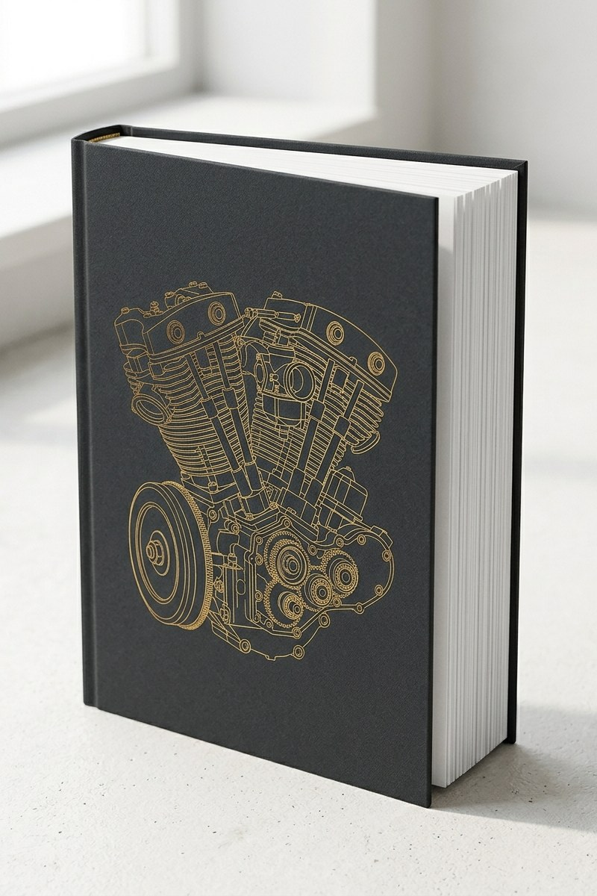

- Service
- Developmental editing
- Timeline
- About 8 months
- Format
- Memoir, all Amazon formats
- Reader rating
- 4.3 stars on Amazon
Case study 01
Memoir development for a first-time author
The client
A first-time author who left an established professional career to train as an automotive technician.
The challenge
The partial draft mostly recounted his coursework. The material was accurate but dry, without a consistent voice or a story arc to keep readers engaged.
The approach
- Built the outline from the partial draft, then coached the author chapter by chapter through multiple rounds of revision
- Defined a consistent, personal tone for the whole book, using humor to draw readers in
- Restructured the manuscript so that each chapter centers on a real vignette that serves as a learning experience
- Developed the book's central theme: the author as an outsider, and his respect for the resilience of classmates who saw the trade as a path out of poverty
- Shaped a final chapter that ties back to the earlier vignettes, taking the book beyond a personal memoir to broader life lessons
- Gave guidance on cover concept and design as a key marketing tool
- Met with the author regularly by Zoom and phone, and used shared editing software for substantial edits and redrafts
The results
- Went from outline to published book in about eight months
- Before release, an outside publishing house refined the manuscript for market, tightening select passages while preserving the book's structure and the author's voice
- Published on Amazon in all available formats and rated 4.3 stars by readers
- Since publication, the author has presented to a range of groups about his late-career pivot
- The author's story was later featured in a major national publication
“Mary Ellen was professional and prompt from start to finish, and genuinely collaborative. She helped me shape a rough first draft into a manuscript ready for my publisher’s final edits, and she never lost sight of my voice along the way.”